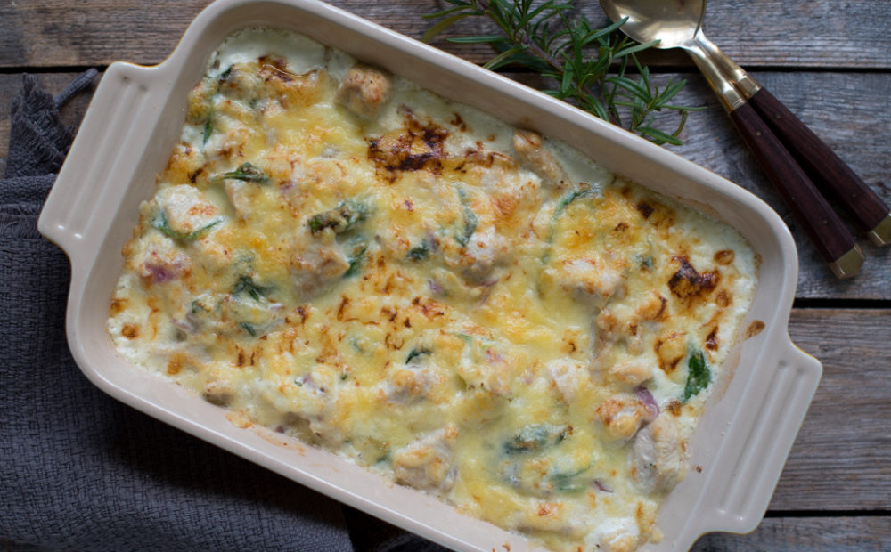

Kyllingform

Ingredienser
- 500g Tagliatelle
- 1stk Chilli
- 3dl Fløte
- 2stk Kyllingbuljong
- 1stk Løk
- 3stk Kyllingfilet
- Ost
Fremgangsmåte
- Kok opp pastavann og ha i pasta.
- Kutt opp kylling i terninger, deretter kutt løk og chilli.
- Stek kylling, løk og chilli, deretter ha opp i alt det flytende.
- Overfør pasta i en ildfast form da denne er ferdig, deretter hell over det flytende. Rør det sammen.
- Strø over ost og sett i ovn på 200 grader frem til osten er gylden.
TIPS!Om du bruker matfløte kan du bruke litt maizenna for å få det flytende tykkere!